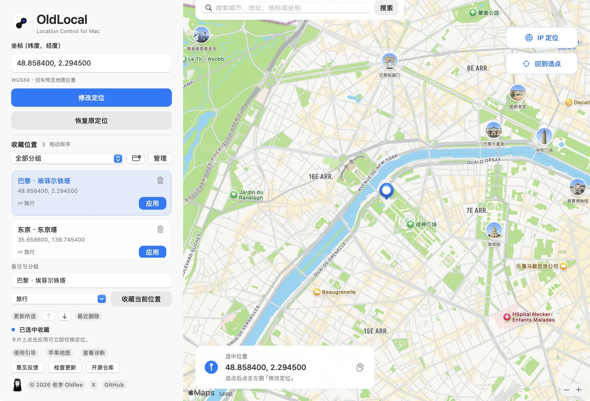

下载到应用程序
解压应用 ZIP，把 OldLocal 拖入「应用程序」。Source code 是源码包。
让 Mac 的落点，由你选择。
输入坐标、地图选点，常用位置一键切换。
Apple Silicon · macOS 15+ · 实测 macOS 15.7.4

原生界面 · 公开地标演示 · 图钉表示选点预览
A PLACE TO START
点一个地标，看看坐标如何成为一个落点。
在 OldLocal 里，它还可以成为你的常用收藏。

仅在网页中预览，不会修改设备定位。地图为世界轮廓示意。
LESS REPEATING. MORE EXPLORING.
一次整理，随时取用。把反复复制的坐标，变成有名字的位置。
给常用坐标添加备注，点击收藏卡片上的「应用」，直接切换到这个位置。
软件不读取、不保存管理员密码。更新软件后，组件可能需要重新批准一次。
收藏、备注和分组保存在用户资料目录。反馈不会自动附带这些内容。
使用结束后点击「恢复原定位」。关闭软件不会自动恢复位置。
READY IN A FEW STEPS
解压应用 ZIP，把 OldLocal 拖入「应用程序」。Source code 是源码包。
完成首次授权。粘贴坐标、搜索或地图选点，核对后点击「修改定位」。
查看状态，并在目标应用核对位置。结束时点击「恢复原定位」。
当前安装包为 Apple Silicon / arm64，最低构建目标 macOS 15。定位操作在 macOS 15.7.4 实际验证，其他版本尚未逐一验证。没有提供 Intel、Windows 或 iPhone 版本。
当前包采用 ad-hoc 签名，尚未经过 Apple 公证。确认从本仓库 Release 下载，然后查看「系统设置 → 隐私与安全性」是否提供允许打开选项。系统版本和管理策略可能影响打开方式，无需关闭 SIP。
选点、搜索和回车只做预览。点击「修改定位」或收藏卡片「应用」才会写入系统。图钉不是目标应用已采用模拟位置的证明，需要实际核对；不同应用可能使用不同的定位来源。
不会。OldLocal 修改 Mac 本机的定位模拟参数，不提供 VPN，也不改变公网 IP或连接的 iPhone。「IP 定位」只查询区域估计坐标，VPN/代理可能使结果对应网络出口。
首次启用或新版签名改变后需要一次管理员批准。已就绪的组件处理日常修改和恢复，无需每次输入密码。
不会。结束时请手动点击「恢复原定位」并核对结果。不要删除原始定位备份。苹果地图可能有缓存，可退出后重开检查。
删除分组会将收藏移到「未分组」，保留备注与坐标；管理窗口内可撤销最近一次分组操作。删除收藏则进入「最近删除」，可以恢复。
在应用里「检查更新」，或下载最新 Release。退出应用后手动替换，新版组件可能需再次批准；收藏保留。目前不自动安装。